Surviving the multi-device news challenge
How the Guardian uses APIs and open data
Matt Andrews – @mattpointblank
23rd January 2014 • Hacks & Hackers Berlin
Introduction
I'd like to explain to begin with what I mean by "the multi-device news challenge". Here are a couple of big numbers:
322: the number of unique browser versions the Guardian gets traffic from in a month.
6236: the number of unique devices that traffic comes from per month.
82m: the number of unique readers sending us that traffic
(all stats for September 2013).
This is the multi-device challenge: anyone producing content for the web is facing it, and it's getting harder.
The last time I was here in Berlin it was 2007 and things were pretty different, particularly when it came to my taste in hairstyles. A few other things have changed since then too:
I now work at the Guardian newspaper in London. My job all day is basically this – playing around with HTML, CSS and JavaScript as a front-end developer. That code is a small part of this tool which I'm helping build: it's called Composer and it's used by Guardian journalists to create all sorts of content on our website. I'll be talking more about that later.
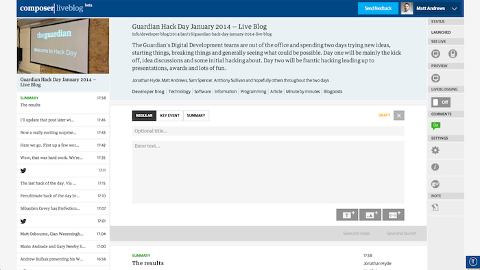Composer, the Guardian's new content publishing app.
I'm here today with one aim: to convince you to make APIs for everything.
Wait, what's an API? Why does a newsroom need one?
Hopefully the hackers in the room will already be familiar with what an API is, but for those who aren't: what on earth is an API and why would a newspaper use one?
Well, to answer the first question: an API is an Application Programming Interface. In the Guardian's case, our main one looks like this:
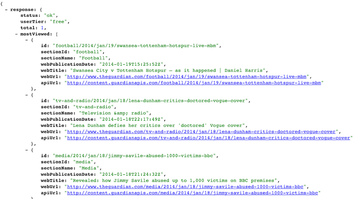Some JSON from the Guardian's Content API.
But that's boring. All we really need to know is that APIs are about communication. They're a way of building a layer that can mediate between different things and answer questions. For example:
- show me the top five most-read articles
- what are the current football scores?
- add this reader's comment to the database
We use that data I showed a second ago to power all sorts of things, including the Guardian's new responsive redesign.
Three topics I'll cover:
- Why should you have an API?
- What will an API change about your process?
- How can you create an API for your data?
I'll speak for around 25 minutes and then open things up for questions.
1. Why should I have an API?
The very first topic, then: why should you have an API?
It's a simple answer: because APIs make building new things trivial.
Here's a quick example of a bunch of different applications we've built using the Guardian's Content API:
- the new responsive desktop website
- ... which also has a mobile view, too
- the former Guardian Facebook app
- our iPhone app
- our Android app
- our Kindle app
...plus a whole host of others. Not one of these applications required us to write any database code at all. All the data we wanted was already in our API, organised by section, tag, author and other filters. If you want to get the latest headlines for Sport which were marked by our editors as "lead content", it's a single API request.
Using APIs like this can be a huge benefit for scalability. Scaling software means making it capable of vast growth, allowing it to stand up when lots of traffic arrives. For a news website this is really important. Our API helps the Guardian do this and I'll quickly walk you through why that is:
Without an API, each platform you build on has to repeat code and connect to a database, re-implementing the same techniques for the same results each time. Each platform is separate and can't share cached data when the output belongs in different formats.
Introducing an API into this equation really simplifies things: now the back-end database could be swapped out and the client apps don't need to care about the data's source: they just go via the API. Scaling and caching can happen solely at the API layer, rather than on each separate platform. One API can support dozens of types of clients.
Thinking in multiple contexts
Another reason you should have an API: it forces you to think in multiple contexts.
What do I mean by that? Here's a quick example.
This is the Guardian's current desktop site. The article itself and the photo are designed to fit a 460 pixel wide template. This has been the case for at least five years or so.
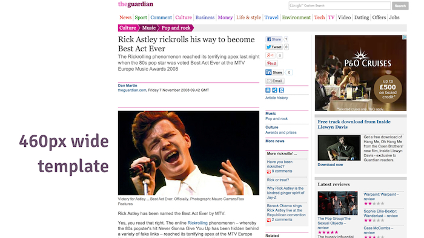The article design fixed to a 460px wide content template.
In the CMS we use to power this website, the tools themselves reinforce that concept:
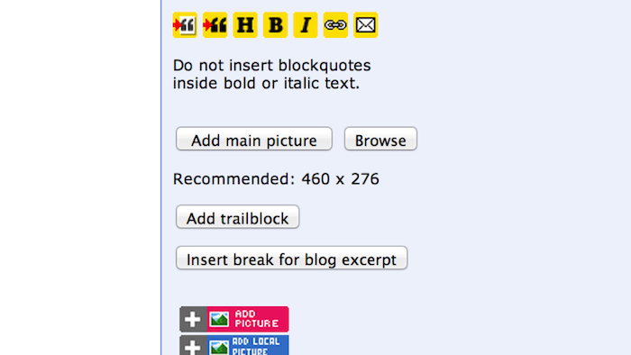The Guardian's legacy CMS, enforcing the 460px display limit.
Editors are so used to thinking of the website as being this 460 pixel column that everything we did was geared up to provide it for them.
The problem, of course, is that these days we see traffic from a huge array of different devices and screens:
This diagram shows common screen sizes for various devices. You can see that for quite a few of them, that 460 pixel template isn't suitable.
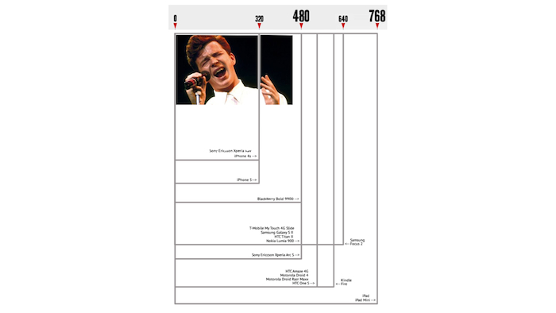Lots of different device contexts.
Once you switch from storing blobs of HTML for articles into a structured data format like our API, it forces you to think in these different contexts. An API is an abstracted way of representing your content: you have to break it down into logical elements: headlines, standfirsts, tags, etc. In our case, we break down images into different sizes like this:
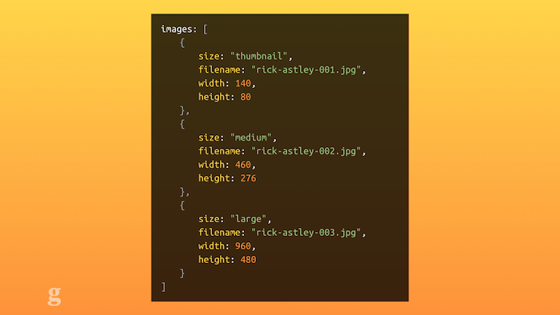JSON representing image sizes
It also helps that our API is used in that wide variety of contexts: every time we make a change to it, we have to think about what impact it might have. "How will this look in the API?" is a common question in our teams: we want to make sure we don't build assumptions into our products. Not every device will support Flash; not every screen is a 19" monitor.
External collaborators
Another benefit to having an API: other people can make things with your data.
The Guardian's Content API is open and public. Any of you sitting here now could make a request to it and get back our content: headline, images, article text and all. You might wonder why this is a good thing: surely this means other people can make their own bootleg versions of the Guardian?!
Well, yes: and that's fine. This is from the Google Play store: there are at least five Guardian-related Android apps – but we only made two of them. Those other three were made by random developers. They use our API to grab our content and present it to readers.
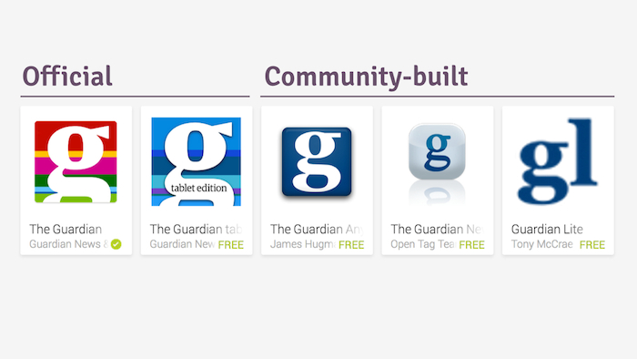Different Android apps for the Guardian, official and otherwise.
Again, you may think this sounds terrible: surely the Guardian wants to control how its news is presented? Well, perhaps, but we know that people consume our content in different ways. If someone else wants to take the time to build another way of consuming our journalism, we still benefit: if someone is reading your content, they're reading your content. Doesn't matter if it's on the official app or a community version. As long as the content is clearly branded as the Guardian (which is one of our requirements for using the API), we still win.
2. How do APIs change your processes?
The second thing I'd like to talk about is how APIs can change your processes. What will be different once you start using one?
The primary difference is that you stop thinking of your website as a monolithic structure; a huge, interlinked bag of stuff, tightly coupled.
APIs help you "decouple" things: you can break different parts of your site up into logical blocks which are independent of one another. Let me give you an example:
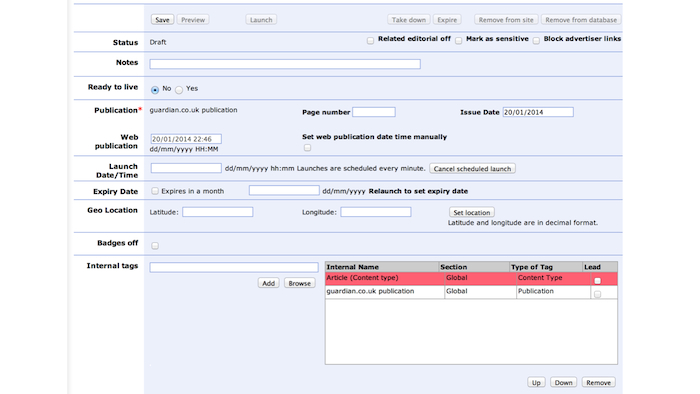The Guardian's legacy CMS
This is the Guardian's old CMS. It's a terrifying mess of arcane code and complexity. It does everything. Seriously. It can:
- post new articles to the website
- manage tags which we add to our content
- upload images and search existing photo libraries
- send emails to subscribers
- create polls, competitions and quizzes
- create a cached copy of the website in case it crashes
- make new "microapps" which allow any new code to run on the site
- create microsites which advertise commercial partners
... and a host of other improbable things. That CMS was also tied into our frontend code, eg. the templates and design which made up the desktop website.
What that meant was that when we wanted to update that frontend: e.g., change a font colour somewhere, we had to take down that entire CMS for 15 minutes while we deployed the changes.
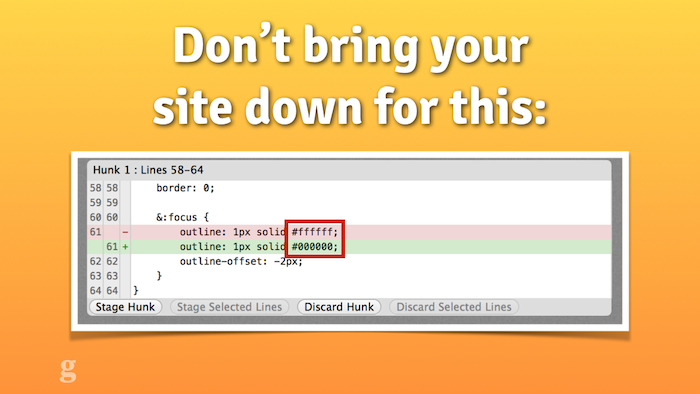A change that once upon a time required turning off the CMS for 15 minutes.
Can you imagine walking into the Guardian newsroom on a Monday morning and saying "sorry guys, could you just stop posting content for a bit while I change a font somewhere?". We did this every two weeks.
Our APIs mean we can abstract that process and break it apart. Composer, the new CMS we're building, pushes new content directly into our main Content API. It works independently of the front-end of the website, eg. the user-facing aspect of it.
This also means that publishing becomes multi-faceted: we can hook up any number of web publishing tools to our APIs as necessary. We don't have to view publishing as a one-to-one relationship. Building a single tool for journalists to use implies there's just one way to publish online. With an API, you can make it the "source of truth": as long as the data makes it to the API and is usable by its clients, the tools to input that data can be varied and different.
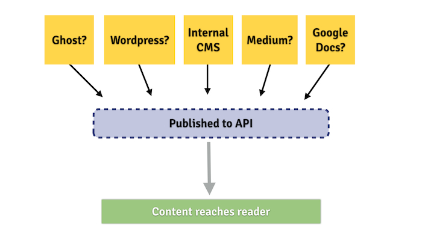The publishing options open up when you have a good API.
Open linked data
It's also changed how we show related items and additional content. In the past we've tried things like embedding HTML widgets in content which do things like show videos or factboxes and other extra details. As with the template earlier, these bits of content often assume certain contexts that we just can't depend on anymore. By using linked data we can make this smarter.
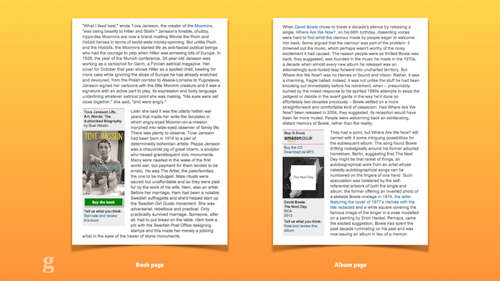Some of the ways the Guardian represents linked data.
For example: a lot of our content uses tags to show its relationship: an article can be tagged as a review, as relating to David Bowie, as being a gallery, etc. But we also have a concept of "external tags": these are things outside the Guardian's taxonomy but useful still. For example, we can tag content with an ISBN, linking it to a published book. We can add tags for third party APIs, like the PA sport data, so we can show information about a live football match alongside the article. We can show information about albums by using MusicBrainz IDs to link our content. This kind of thing abstracts our content outwards: now other people can query Guardian content which has a MusicBrainz ID and do interesting things with it.
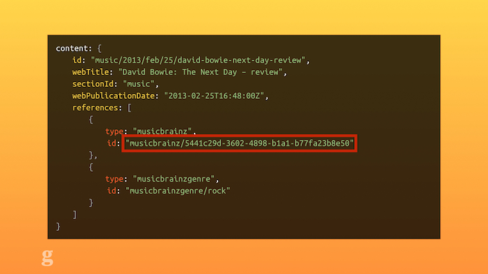MusizBrainz IDs in the Guardian's API.
Once we get away from the idea of the web being a single thing, like a page of a newspaper we just arrange things on, we start to see why structured data with rich metadata around it is really important.
Take page layout: In the past, if you wanted an inline image, you'd have to insert one that was 200 pixels or less wide. This would be an implicit hint to our templates that it should sit alongside text. Again, this doesn't work anymore for all contexts. Instead, we're looking at how we can make these layout hints explicit: what if you could add metadata to embeddable objects to say "this thing should sit inline with this paragraph", which was then available in an API? Then you could be smarter and make different layout decisions based on the context you know up-front (the editorial story) and the context you know when rendering the page (the user's platform).
Hacking & experimenting
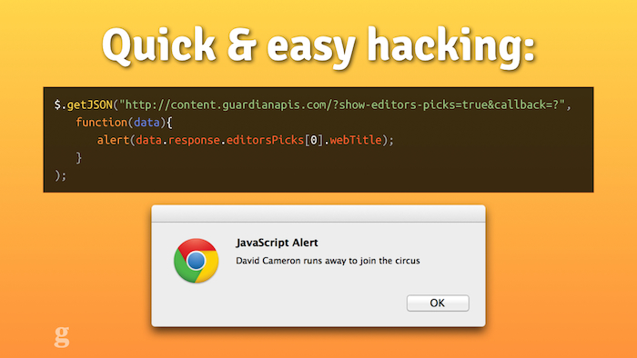This is how simple it can be to get started with our API
Another thing that changes once you have an API is creativity. I'm a front-end developer. The minute I have to start connecting to databases, writing SQL queries and caching, things are going to end badly. With a good API, though, I can quickly and simply grab what I need. This means that when we run departmental Hack Days at the Guardian, people can get up and running with real, live data in a matter of minutes.
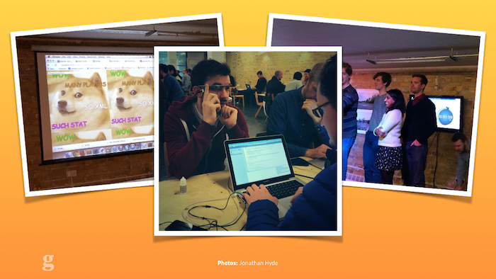Some Guardian developers making a Google Glass app with our API
At our hack day last week, some of our Android team built a prototype Google Glass app for the Guardian using our API. Could you imagine how much slower development would be on exciting new features if we had to write the same "boilerplate" code every time?
Writing your own API
The final thing I'd like to talk about, briefly, is how you go about writing your own API.
Now, I'm far from an expert on the topic: my only credentials for this are hacking together a data feed for SXSW 2011 when the official site didn't provide data for the gigs by various bands.
Before thinking about programming languages, hosting details or technical implementations, though, the first thing to work out is your content model.
Sit down in a room with journalists of all levels, if you're a developer, or grab a mix of your developers if you're a hack. Stay locked in that room with as much coffee as is necessary before you can work out what the constituent parts are of your content.
Think of it as a consumer: if you were a third party wanting to build things with your stuff, how would you expect it to work? If you're anything like us, you have a few weird quirks or inexplicable features which only your team worries about: for us it's things like remembering that in the Guardian American edition, we have to say "Sports", not "Sport". Can your API handle that kind of thing automatically? If your imaginary user shouldn't need to worry about it, you'll need to build it in.
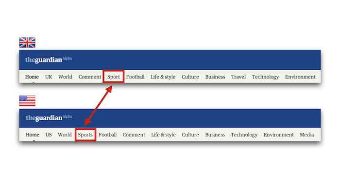Just one of the international considerations the Guardian has to make.
If you can, another tip is to build it with openness in mind. Your bosses, particularly the ones in charge of syndication, might not be too keen on programatically making all your journalism available for anyone to import. But then, your content's already on the web, right? If someone wants to steal it and they're committed enough, they can. We do things like embed ads into the article body text for external developers using our APIs. That way we still get some commercial benefit as well as the readership benefit when someone builds using our stuff.
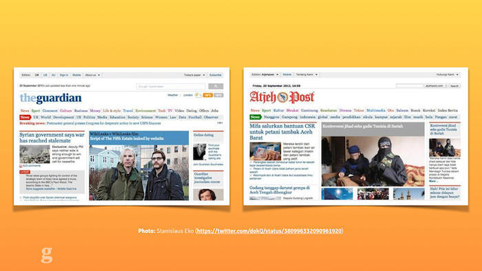Copying on the web has been around a lot longer than APIs...
Once you've come up with a model and figured out what to build it in, make it easy to query. The Guardian has a fairly unusable but popular console tool for exploring the API. Don't make it hard for developers to use your data or they'll give up and go somewhere else. The barrier to entry should be so embarrassingly low that everyone will want to start thinking up interesting things to do with your data rather than wondering what database library they'll use to connect to your content.
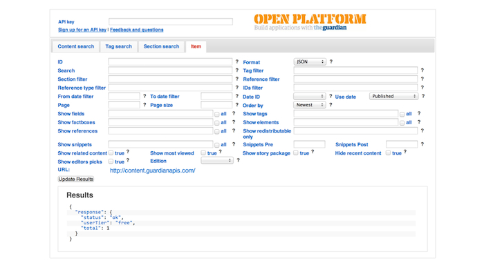The Guardian's just-about-usable Content API explorer console.
Build it simple to start with. An insider tip: there's an internal Guardian API we use for analytics which requires an API key to use. One of the developers admitted to me privately that any string is a valid API key: all they use the key for is to track usage. If a certain key starts causing trouble they can just block it. This might not work for every use case, but when you're just beginning it can save you time writing complex rate limiting code when you might not need it for six months. What's the minimum work you can do to get something useful built?
Concluding thoughts
So, to conclude.
It's actually really straightforward: build an API. Now! If you work for a news organisation, hassle your bosses about letting you create one. Or just go ahead and make one anyway.
Maybe you already have an API – great? Is it open? If not, why not? There are lots of benefits to opening up your content to everyone: take advantage of them.
Why do you need an API? Once again:
- building new things is much easier & quicker
- they help you scale up
- they get you thinking cross-platform by default
- other people can do cool stuff with your data
Finally, one more big number to close with:
1. One person: that's you. Go and help your news organisation prepare for the future.
Thank you very much for listening.
— Matt Andrews
mattandrews.info • @mattpointblank
Notes
Many thanks to Annabel Church and the rest of the Hacks & Hackers Berlin team for organising the event, and to Nic Long at the Guardian for helping me research and fact-check this talk